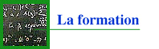
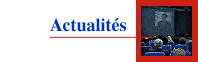

626 captures
08 Aug 1997 - 03 Aug 2022
Jul
AUG
Feb
08
1996
1997
1998
success
fail
About this capture
COLLECTED BY
Organization:
Alexa Crawls
Starting in 1996,
Alexa Internet
has been donating their crawl data to the Internet Archive. Flowing in every day, these data are added to the
Wayback Machine
after an embargo period.
Collection:
Alexa Crawl GR
Crawl GR from Alexa Internet. This data is currently not publicly accessible.
TIMESTAMPS
The Wayback Machine - https://web.archive.org/web/19970808223947/http://www.enst.fr:80/
Ecole Nationale Supérieure des Télécommunications
46, rue Barrault - Paris 75634 Cedex 13
Tel: 01 45 81 77 77 - Fax: 01 45 89 79 06


Page maintenue par
webcom
Tandem